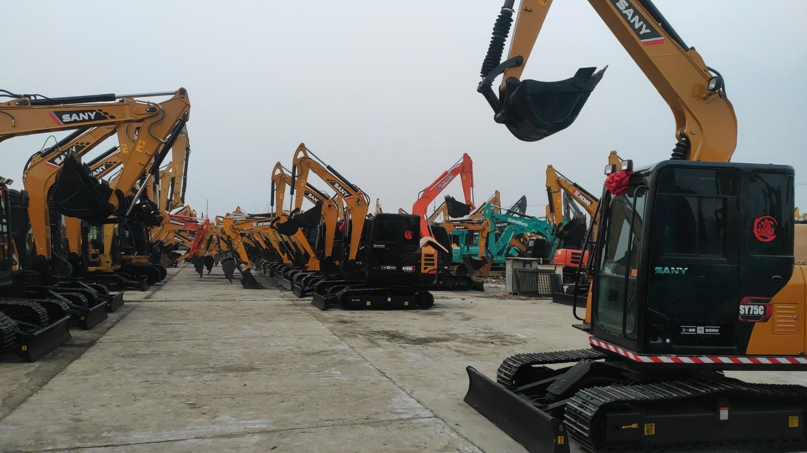
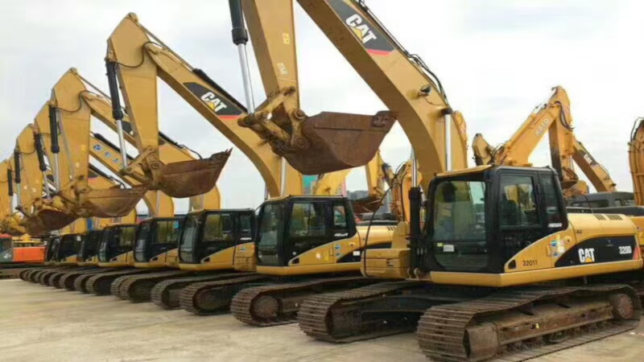
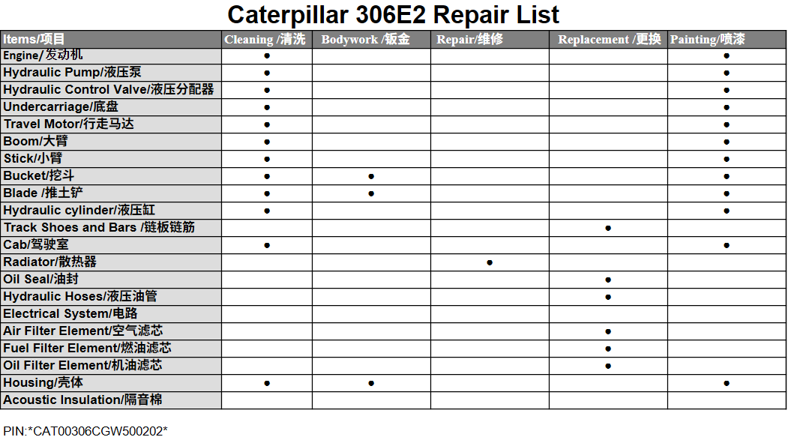
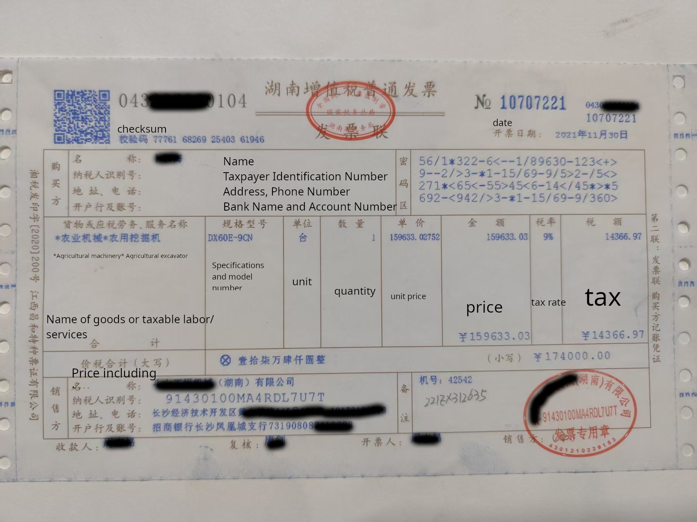
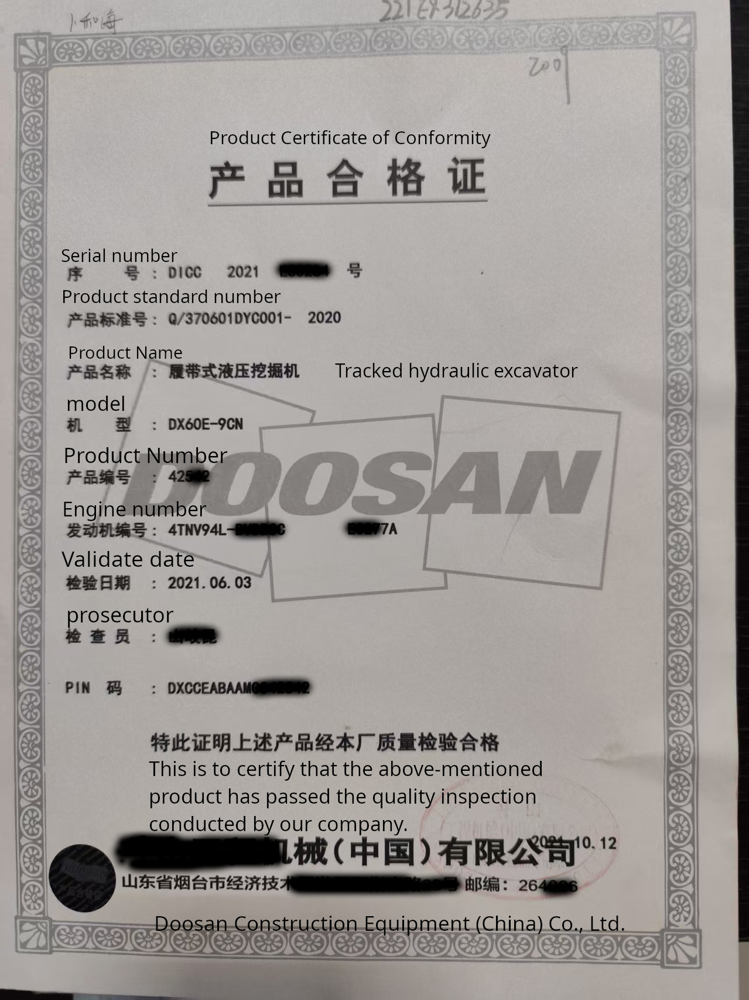
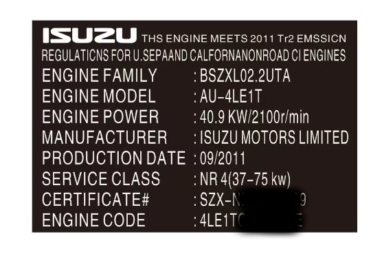

Hva er en Renoverte Gravemaskin
Renoverte Gravemaskiner refererer til brukte gravemaskiner som gjennomgår systematisk inspeksjon og reparasjon for å bringe dem tilbake til en tilstand nær ny. Renoverte gravemaskiner gjennomgår vanligvis full demontering, rengjøring, komponentutskifting, maling og funksjonstesting for å sikre høye standarder i ytelse, utseende og pålitelighet.
Vanligvis er brukte gravemaskiner eksportert fra Kina renoverte maskiner. Kvaliteten kan variere av forskjellige grunner, og det finnes også muligheter for svindel. Min oppgave er å hjelpe deg med å unngå disse problemene før kjøp og å overvåke fraktprosessen for å sikre at du mottar produktet du faktisk har kjøpt.



Renoverte vs. Brukt (Original)
Tjenestene Mine
Vanligvis vil inspeksjonsprosessen bli tatt opp som en 4K-video, som fanger gravemaskinens arbeidstilstand og detaljer, sammen med videokommentarer. Du kan også se en direktesending via WhatsApp.
For Shanghai
- 100 $ (1 dag, ikke per enhet)
- 180 $, inspeksjon + tilsyn med forsendelse (2 dager), full betaling kreves
For andre byer
- 180 $ (1 dag, ikke per enhet. Reisetid er ikke inkludert.)
PayPal, Alipay, WeChat, bankoverføring
- Bekreftelse av selskapets legitimitet.
- Inspeksjon av maskinens ytelse.
- Overvåking av lasting og frakt.
Dokumenter
- Firmaets forretningslisens
- Historikk over tvister for selskapet
- Video som viser maskinens ytelse og detaljerte bilder
- Liste over utskiftede deler
- Fraktfaktura og video av fraktprosessen
- Andre dokumenter du har bedt om
Uverifiserbar informasjon:
- Faktiske driftstimer. I Kina er det vanlig praksis å endre driftstimer på brukt utstyr. Salgsselskaper vil justere gravemaskinens driftstimer basert på den spesifikke forhandlingssituasjonen, og det er teknisk umulig å fastslå de ekte timene. Vi kan bare anslå timene ved å sammenligne med den opprinnelige fakturadatoen.
- Den ekte eieren av gravemaskinen. Kinesiske selskaper deler ofte ressurser og selger gravemaskiner som tilhører andre som sine egne. Hver selger kan påberope seg eierskap til gravemaskinen overfor kunden og selge den lovlig. De deler deretter overskuddet med den egentlige eieren. Vi kan bare verifisere den juridiske identiteten til salgsselskapet.
Arbeidsflyt
- Bekreft gravemaskinens informasjon med salgsrepresentanten, inkludert utstyrsmodell, serienummer/kjøretøyidentifikasjonsnummer, motorserienummer, firmanavn, adresse osv.
- Bekreft listen over utskiftede deler med salgsrepresentanten (du kan gi ham eksempeltabellen nedenfor for å fylle ut).
- Beregn inspeksjonsavgiften og fullfør betalingen. Planlegg en inspeksjonstid.
- Møt opp på angitt sted til avtalt tid for å inspisere maskinen, sammenligne den med listen over utskiftede deler for å sjekke eventuelle avvik. Ta videoer og bilder, og organiser informasjonen på en tydelig og lettfattelig måte.
Eksempel:

Dokumentene som selgeren bør gi deg.
- Verifiserbar PIN/VIN/Motornummer
- Gyldige historiske dokumenter for EPA / ECCC / Euro / CE-gjennomgang
- Utstyrsmanual (for Canada)
- Oppussingsrapport / Register over utskiftede deler
Fakturaeksempel
EPA
EPA Importvarsel for brukte gravemaskiner
-
Under importprosessen gjennomgår CBP utstyrsdokumenter i henhold til EPA-regler. Vanlige årsaker til avslag inkluderer ufullstendig dokumentasjon, problemer med serienummer, manglende evne til å bekrefte at motoren er brukt, eller uklare produksjonsdatoer.
-
Salgsselskapet kan vanligvis bare gi historiske oppføringer for det brukte utstyret, og fullstendigheten kan variere. Disse dokumentene brukes som referanse for tollmyndighetene for å bekrefte om motoren er brukt, om produksjonsdatoen er korrekt, og om den kvalifiserer for EPA-unntak for brukte motorer.
-
Om en motor kvalifiserer for unntak avhenger hovedsakelig av produksjonsdatoen og utslippsnivået (Tier 2, Tier 3 eller Tier 4). Du kan raskt anslå omtrent hvilket nivå motoren tilhører basert på produksjonsåret:
-
1996–2000 → Tier 1
-
2001–2006 → Tier 2
-
2006–2011 → Tier 3
-
2011–2014 → Tier 4 Interim (Tier 4i)
-
2014 og senere → Tier 4 Final
-
-
Utslippsstandarden bestemmes av motorens produksjonsdato, ikke maskinens produksjonsår. For eksempel: En maskin produsert i 2010 med en Tier 2-motor produsert i 2007 er juridisk Tier 2, ikke Tier 3.
-
Når fullstendig historisk dokumentasjon er levert av selgeren, bør fortollingsprosessen håndteres av en tollmegler som bistår mottakeren. Hver part bør operere innenfor sitt profesjonelle ansvarsområde.
Følgende er noen av dokumentene vi kan gi:
-
Original faktura

-
Samsvarssertifikat

-
Motorens utslippsdokument

Youtube-videoer
- Hvordan finne den billigste brukte gravemaskinen i Kina
- Hvis du planlegger å kjøpe gravemaskiner fra Kina
- 2024 Hitachi ZX70 med 300 timer, 14 500 USD?
- Er tredjepartsinspeksjoner pålitelige? Ikke helt.
- Hvorfor viser timetellerne på alle brukte kinesiske gravemaskiner bare 500 timer?
- Hvorfor ser brukte anleggsmaskiner i Kina så skitne og stygge ut?
- Hvordan unngå ekstra kostnader når du kjøper en gravemaskin – full kostnadssjekkliste
- Hvordan inspisere en oppusset gravemaskin
- Virkelig? Falsk? Grå? Et problem forårsaket av kulturelle forskjeller – “Thesevs’ skip”-paradokset
- Kan du virkelig finne pålitelige gravemaskiner på Alibaba?
- Hvordan ser en ekte original kinesisk gravemaskin ut?
FAQ
Q: Bør jeg kjøpe en brukt gravemaskin eller en oppusset en?
A: Hvis du har evnen til å reparere og vedlikeholde gravemaskiner selv, er en brukt maskin uten tvil det beste valget. Du kan håndtere reparasjoner og justeringer selv. Men hvis arbeids- og reservedelskostnadene i ditt område er høye, er en oppusset gravemaskin et bedre alternativ. I Kina er arbeids- og reservedelskostnadene mye lavere. En oppusset maskin gir en opplevelse som nesten tilsvarer en ny.
Q: Hvorfor viser oppussede gravemaskiner vanligvis rundt 500 timer?
A: Dette er vanlig praksis og dagens realitet i Kinas marked for brukte anleggsmaskiner, og vi kan ikke endre det. For å skille dem fra nye maskiner blir de med 1000–4000 driftstimer satt til 500 timer etter oppussing. Maskiner med over 5000 timer er ikke verdt å pusse opp på grunn av ytelsesfall. Oppussede maskiner leveres med garanti som starter fra 500 timer, lik nye maskiner.
Q: Selgeren sa at dette er en “lagermaskin”. Stemmer det?
A: Dette er en vanlig salgstaktikk i Kina, men det er svært usannsynlig at det finnes “lagermaskiner” i ordets egentlige betydning. Selv en gammel maskin kan aldri selges til prisen av en oppusset maskin.
Q: Jeg må bruke gravemaskinen i et tøft miljø. Kan du anbefale en passende maskin?
A: Problemet ligger vanligvis ikke i selve gravemaskinen—designere og selgere ønsker at den skal fungere pålitelig. Men enhver gravemaskin vil raskt få problemer i tøffe miljøer. Derfor er nøkkelen å ha dyktige teknikere og erfarne operatører. Entreprenørselskaper har vanligvis teknikere som regelmessig sjekker maskinene.
Q: Bør jeg betale et depositum på nettet?
A: For langsiktig samarbeid kan det være mulig. Men hvis dette er ditt første kjøp, er det risikabelt å betale depositum på nettet. Mange kinesiske selskaper bruker depositum som en viktig inntektskilde. Når depositumet er mottatt, har de overtaket.
Q: Kan jeg bruke gravemaskinen direkte når den ankommer?
A: Det avhenger av størrelsen på gravemaskinen. Hvis maskinen ikke passer direkte inn i containeren, må vi dessverre demontere den og pakke den i containeren. Du må montere den igjen når den ankommer.
Q: Hvordan er engelskkunnskapene deres?
A: Vi bruker vanligvis oversetter for kommunikasjon, siden svært få i denne bransjen snakker flytende engelsk. Hvis du har WeChat, er den innebygde oversetteren ganske praktisk.
Q: Hvilke deler blir byttet under oppussing? Er de originale?
A: Gummislanger og slitedeler. Hovedkomponentene blir vanligvis rengjort i stedet for å bli byttet. Delene som ikke blir byttet inkluderer maskinkroppen, motoren, hydraulikkpumpen, hydraulikkfordeleren og hovedkontrollsystemet.
Q: Blir all oppussing gjort på merkeverksted eller reparerer dere selv?
A: Merkeverkstedet reparerer kun maskiner som fortsatt er under garanti. Garantiperioden i Kina er 1000 timer.
Q: Under oppussing, blir alle deler byttet til nye og originale fra merket?
A: De er helt nye. Vanligvis byttes kun deler som slites lett. Alle kommer fra anerkjente produsenter, og kvaliteten er sammenlignbar med originaldelene.
Om meg
Mitt navn er Mike Phua. Jeg jobbet tidligere hovedsakelig med salg av gravemaskiner, men jeg har nå forlatt den salgsstillingen og jobber med inspeksjon av gravemaskiner. Jeg har vært i denne bransjen i 3 år.
Jeg er en uavhengig tredjepart, ikke tilknyttet noe selskap. Og jeg bor i Pudong, Shanghai.
Jeg er opprinnelig fra Shanghai og ble født i 1981. Jeg fullførte en mastergrad i ledelse ved University of Shanghai for Science and Technology. Jeg vil gjerne være din venn i Kina og hjelpe deg med eventuelle utfordringer som avstanden kan gi.
Når du trenger meg, vil jeg være til tjeneste. Jeg tror at navnet mitt vil bli kjent i denne bransjen, og du vil høre flere og flere nevne Mike Phua i fremtiden.
Jeg ser frem til å høre fra deg.
Kontakt
- [email protected]
- Youtube
- Min adresse: Nr. 834, Xiangdai Village, Xuanqiao Town, Pudong New Area, Shanghai